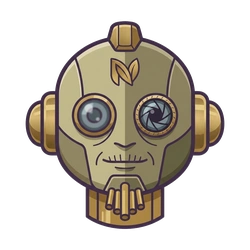
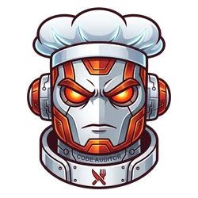
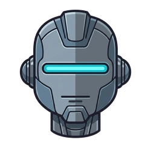

We gave the agents a voice.
Sorry in advance.
A specialized Model Context Protocol server for macOS that synthesizes real-time speech via OmniVoice and native macOS say. AI agents proactively announce status updates, ask clarifying questions, and deliver vocal feedback during pairing sessions.
System Installation
Clone Codebase
Retrieve the repository files to your local macOS filesystem and change into the root workspace.
git clone https://github.com/fellowgeek/mcp-speak.git && cd mcp-speak
Execute Setup Wizard
Launches the interactive setup wizard to select your TTS engine, configure agent personas, set execution permissions, and create your Python virtual environment.
python3 setup.py
Client Integration
{
"mcpServers": {
"voice": {
"command": "/ABSOLUTE/PATH/TO/run.sh"
}
}
}
Personality Cartridges





Prompt Compiler
Sarcastic Senior
Intelligent, unimpressed, and slightly judgmental. This persona acts like a veteran developer tired of seeing mediocre code.